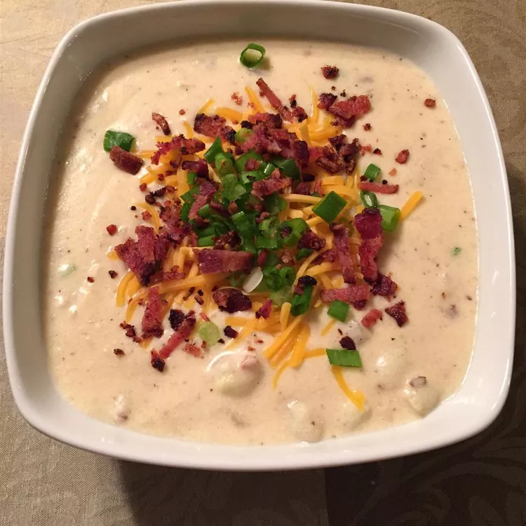

Go Back
Baked Potato Soup
This soup is really delicious
Baked potato soup is the perfect hearty, filling, stick-to-your-bones dinner for a cold winter's night. This baked potato soup recipe will quickly become a family favorite.
- Time: 5 mins
- Cook Time: 30 mins
- Total Time: 35 mins
- Servings: 6
Russet potatoes are perfect for this baked potato soup, as they'll break down beautifully during the cooking process. You can use Yukon Golds, but you might have to cook the soup a bit longer.
We don't recommend freezing baked potato soup. The cream and potatoes will become grainy and watering as they thaw, so you should try to enjoy this soup within five days.

Ingredients
- 12 slices bacon
- ⅔ cup butter or margarine
- ⅔ cup all-purpose flour
- 7 cups milk
- 4 large baked potatoes, peeled and cubed
- 4 green onions, chopped
- 1 ¼ cups shredded Cheddar cheese
- 1 cup sour cream
- 1 teaspoon salt
- 1 teaspoon ground black pepper
Steps
- Place bacon in a large skillet and cook over medium-high heat, turning occasionally, until evenly browned, about 8 to 10 minutes. Drain bacon slices on paper towels; crumble and set aside.
- Meanwhile, melt butter in a stockpot or Dutch oven over medium heat. Gradually add flour, whisking until well-combined. Slowly pour in milk, whisking constantly until smooth and thickened.
- Add potatoes and onions and bring to a boil, stirring frequently. Reduce heat and simmer for 10 minutes.
- Stir in crumbled bacon, Cheddar cheese, sour cream, salt, and pepper. Continue cooking and stirring until cheese is melted.